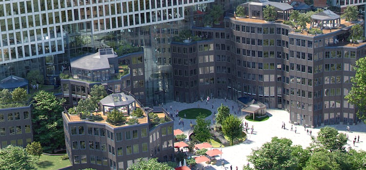
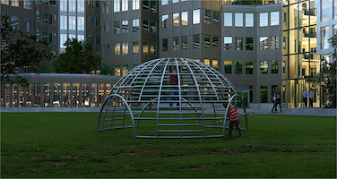

A window to
Welcome to Tripolis-Park
An eco-conscious campus built to stimulate the mind.
Defining a new vision for today’s workforce, right in
the heart of Amsterdam.
A window to a different tomorrow
Tripolis-Park is a high-performance office space, with cutting-edge standards in sustainability, wellbeing and technology.
This creates the optimal environment for individuals and businessesto thrive.
Office Campus:
47k sqm
Completion:
2022
A window to
a different tomorrow
Tripolis-Park is a high-performance office space,
with cutting-edge standards in sustainability,
wellbeing and technology.
This creates the optimal
environment for
individuals and businesses to thrive.
Sustainability
With a `BREEAM-NL Outstanding'
certification, Tripolis-Park is among
the most sustainable
buildings in the
Netherlands.These
top sustainability standards
reduce running costs, and provide
occupants with a highly desirable
working environment.
Wellbeing
Awarded a 'Well Platinum'
certification, the public gardens
and
private roof parks make Tripolis-Park
an oasis of greenery.
The natural
environment,combined
with bustling on-site amenities, makes
a significant
contribution to the
physical, mental and social wellbeing
of its occupants.
Technology
With state-of-the-art, future-proof
technology Tripolis-Park
manages
to dovetail space and facilities
perfectly
with the needs of its
occupants.
This reduces the little frictions that
take you out of the
moment. Not
as an afterthought, but by design.
Circadian Lighting
The interior lighting adapts
to the movement of the sun.
Boosting airflow
The air quality is always maintained
by boosting the airflow where needed.
A municipal
monument

Completed in 1994 by Aldo van Eyck,
the Tripolis complex sits
directly to the south of his
other masterpiece, the Amsterdam
Orphanage.
The three buildings each have
clusters of offices radiating
from central stair towers, and
are notable for their characteristic
wood-and-granite façades with colorful
window frames.

The project was granted Municipal
Monument status in 2019, confirming
its importance as part of the larger
architectural ensemble that includes
the orphanage.
MVRDV
Design philosophy
MVRDV, one of the world’s most
celebrated architecture
firms,
has been responsible for the rejuvenation
and
redesign of the campus.
The landscraper
The design is protecting and celebrating
the iconic Tripolis buildings that were
already in existence, integrating them with
a spectacular new rectangular edifice: the
landscraper.
A sanctuary in the city
By following the shape of the site’s
southern boundary, the landscraper acts
as a sound screen, protecting the complex
and future housing developments from the
noise of the adjacent A10 highway.
A green urban oasis
The further addition of public gardens,
private roof parks and other amenities
haveturned the campus into a green
oasis for its occupants
and visitors -
all in the very heart of the city.
Latest news
and top stories
28-2-2023 — Het Parool
Het Parool on Tripolis-Park™r
Tripolis Park is alsof er een intercity
over een deux chevaux heen is gewalst...
3-5-2021 — Instagram
MVRDV explains
How can we reinterpret our heritage
while giving it a
functional,
contemporary twist?
4-3-2020 — Hello Zuidas
Interview with Sjoerd Lycklama
The Tripolis complex along the A10
motorway is set to be
transformed
by FLOW into a bustling....
We’re independent real estate
developers and asset managers
based in Amsterdam. Since 2013,
we’ve used our drive
and experience
to secure a strong position in the
Dutch office and residential market.
Entrepreneurial by nature, we’re
always looking beyond
existing boundaries and
frameworks for new possibilities.
Rethinking urban spaces to help
create health, happiness, and well-being.
Sjoerd Lycklama
sjoerd@flowrealestate.nl